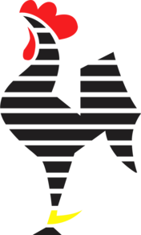

CLUBE ATLÉTICO MINEIRO
(lembrando que o fundo é feito no .css)
Nesta página serão testados os conhecimentos de head, parágrafo, inserção de imagem, redirecionamento com links e iframe.
Teste de link e subtítulo
Ou então, redirecione para o google clicando aqui!
Antes de uma bela imagem do Galo Volpi, segue um exemplo de lista desordenada, ordenada e de definição:
LISTA DESORDENADA
- Clube
- Atlético
- Mineiro
Curtiu? pois tome!
LISTA ORDENADA (10 melhores jogos que fui do Galão)
- Athletico PR 1X2 Galo (2021)
- Galo 2x1 Portuguesa (2006)
- Galo 1x0 Internacional (2021)
- Galo 3x1 Cruzeiro (2022)
- Galo 2x0 Ipatinga (2010)
- Galo 2x1 Ceará (2018)
- Galo 2x0 Juventude (2021)
- Galo 0x1 Internacional (2018)
- Galo 6x0 Figueirense (2012)
- Galo 3x1 Santos (2021)
Meu primeiro jogo em outro estado, jogamos demais!
Início da arrancada pra subida na série B, virada no último lance, time adversário com jogador de linha no gol
Primeiro jogo pós-eliminação na libertadores, muito difícil, a vitória seria importantíssima
Ai credo...
Último jogo e gol do Marques pelo Galo
Virada no último lance. Antes da parada pra copa o time era vice-líder do campeonato. Roger Guedes, Blanco e Luan jogando demais!
A bola não entrava de jeito nenhum! Que vitória suada!
Choveu granizo, a luz do estádio acabou e a torcida não parou de cantar!
Simplesmente a maior apresentação de Ronaldinho Gaúcho em terras brasileiras.
Outro jogo difícil pra caramba que viramos na raça, Hulk não jogou.
LISTA DE DEFINIÇÃO
- chato
- def: aquilo que não é legal
agora sim, dá-lhe Galo!
